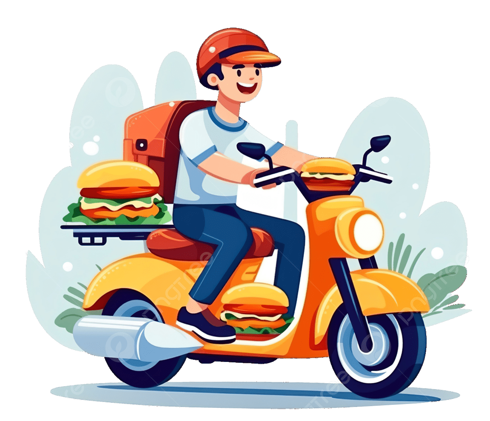

Cepat, aman, dan terpercaya untuk Anda.
Wilayah jangkauan Kec. Cikedung - Kec. Terisi Kab. Indramayu

Pesan Makanan dengan cepat dan aman dengan pembayaran Cash On Delivery (COD).
Antar penumpang atau belanjaan dengan driver terpercaya di sekitarmu dengan pembayaran Cash On Delivery (COD).
Kami tidak menyediakan kontak langsung, tapi menyediakan Pop Up Live Chat di pojok kanan bawah halaman.